Официальный дилер завода C3
Восстанавливаем старый бетон и облицовываем монолитными ступенями из фибробетона. Без плитки и без швов. Работаем только с C3.
Срок работ — от 3 дней
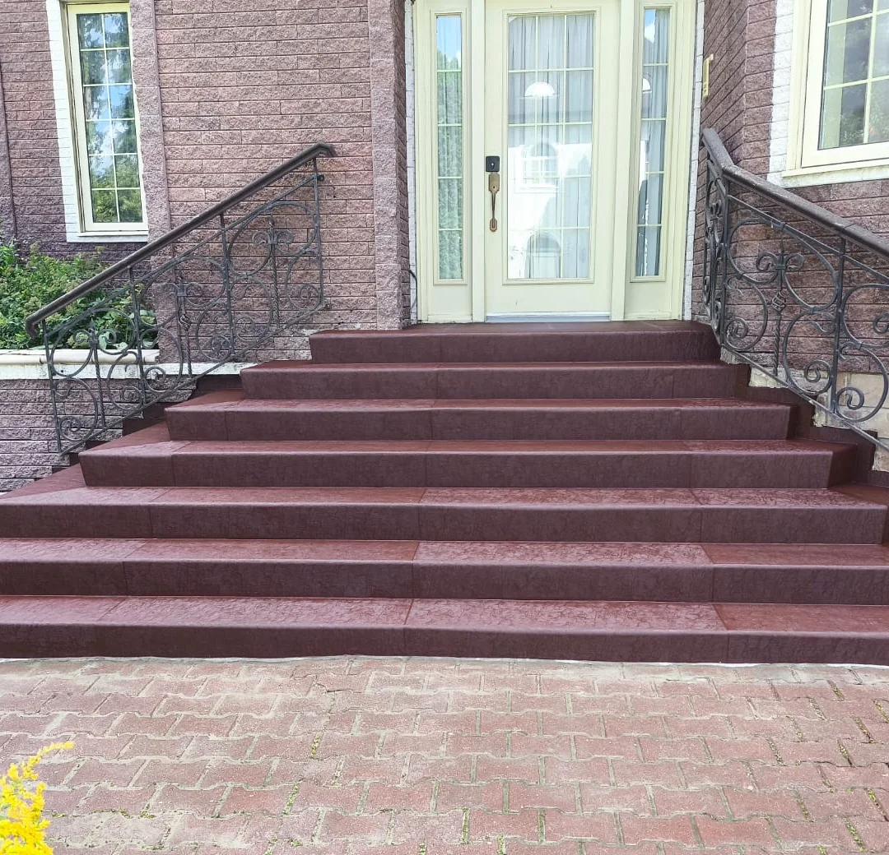
На улице ступеням достаётся больше всего: вода и мороз за несколько зим добивают и плитку, и голый бетон.
Подклеили весной, а после зимы она снова отходит.
Края ступеней сколоты, на проступях выбоины и трещины.
Зимой на гладкой плитке страшно выйти, особенно пожилым и детям.
Затекает под плитку, замерзает и отрывает её изнутри.
Дом, офис или магазин хорош, а встречает гостей разбитое крыльцо.
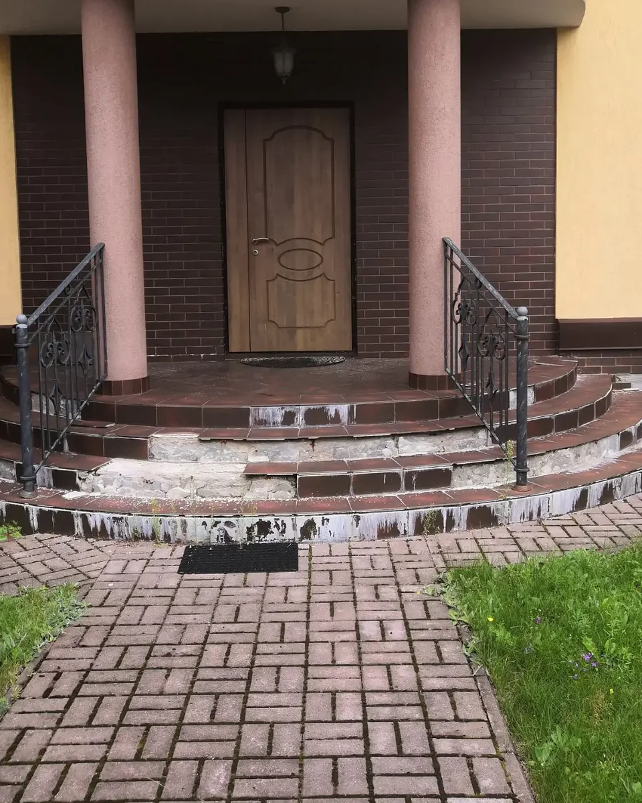
Плитка на ступенях откололась и осыпалась
Не латаем старое, а делаем заново: прочное основание и цельные ступени из фибробетона C3.
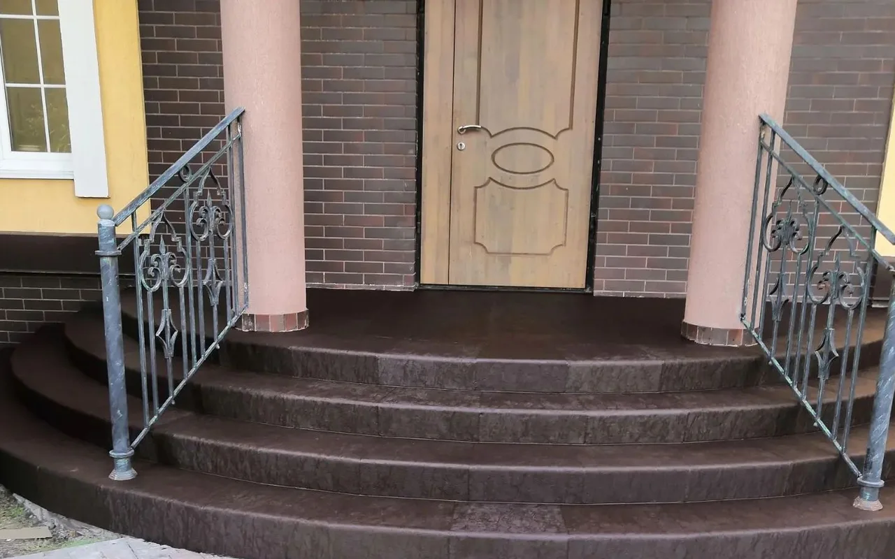
Гарантия на работу
12 месяцев
Материал служит до 30 лет: чинить каждую весну не придётся.
Ступени не скользят ни в дождь, ни в гололёд.
Без швов, сколов и отходящей плитки.
Рисунок на выбор («Дерево», «Волна», «Лофт» и другие) и цвет — от светло-серого до горького шоколада.
Работы занимают от 3 дней.
C3 — ступени из высокопрочного бетона, армированного волокном. Их делает завод, а мы монтируем на ваше крыльцо.
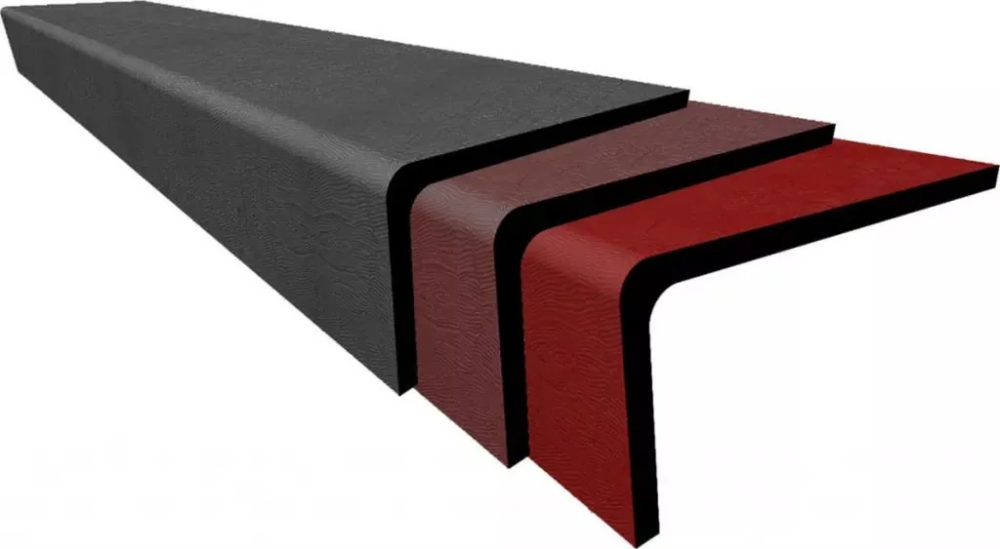
Проступь ПодступенокПочему плитка отваливается
Она держится на клее, а между плитками есть швы. Вода затекает в швы и под плитку, зимой замерзает, расширяется и отрывает её от основания. Каждая зима — ещё немного, и к весне плитка отходит.
Проступь и подступенок отлиты вместе, шва нет, воде некуда затекать.
Фибробетон с диабазовой крошкой, прочность М1200: выдерживает даже вес машины.
Нога не скользит ни в дождь, ни в гололёд.
Переносит мороз и не выцветает на солнце.
Работаем с одним материалом и знаем его до мелочей; мы официальный дилер завода.
Сравнение
| Показатель | Ступени C3 | Клинкерная плитка | Керамогранит |
|---|---|---|---|
| Подступенок одним целым | есть | нет | нет |
| Противоскольжение | R13 | R9–R11 | R9 |
| Морозостойкость | от 500 циклов | 300 циклов | до 150 циклов |
| Швов на погонный метр | 4 | 11 | 11 |
Нажмите на рисунок, затем на цвет — ступени покажут, как это будет выглядеть. Окончательно подберём на замере по образцам.
Сейчас: Волна, бежевый
Рисунок
Цвет покрытия
Пропитка «Кремень»
Волна, Состаренный габбро, Дерево, Соль‑перец, Лофт.
«Волну» и «Дерево» покрывают пигментом одного из шести оттенков, а «Соль‑перец» и «Габбро» — бесцветной пропиткой «Кремень»: камень выглядит влажным, рисунок ярче.
С плавно скруглённым краем (капиносом), рисунок «Состаренный габбро».
Для площадки перед дверью, пандусов и боковин.
Для магазинов, офисов и общественных входов.
Рассказываете про крыльцо, договариваемся о дне замера.
Приезжает инженер‑замерщик: смотрит бетон, всё измеряет и с образцами в руках помогает выбрать рисунок и цвет. Выезд — 2 000 ₽ в пределах МКАД, за МКАД — плюс 60 ₽ за каждый километр.
Менеджер готовит итоговый расчёт и присылает вам его файлом.
Всё устраивает: заключаем договор, вы вносите предоплату.
Снимаем старое покрытие, восстанавливаем бетонное основание и монтируем ступени и плиты C3.
Наносим финишное покрытие или пропитку «Кремень» и сдаём работу с гарантией 12 месяцев.
Сами работы на объекте — от 3 дней. Небольшое крыльцо делаем за 3–4 дня, точный срок назовём в расчёте.
Двигайте шторку на фото: слева крыльцо до ремонта, справа — после облицовки C3
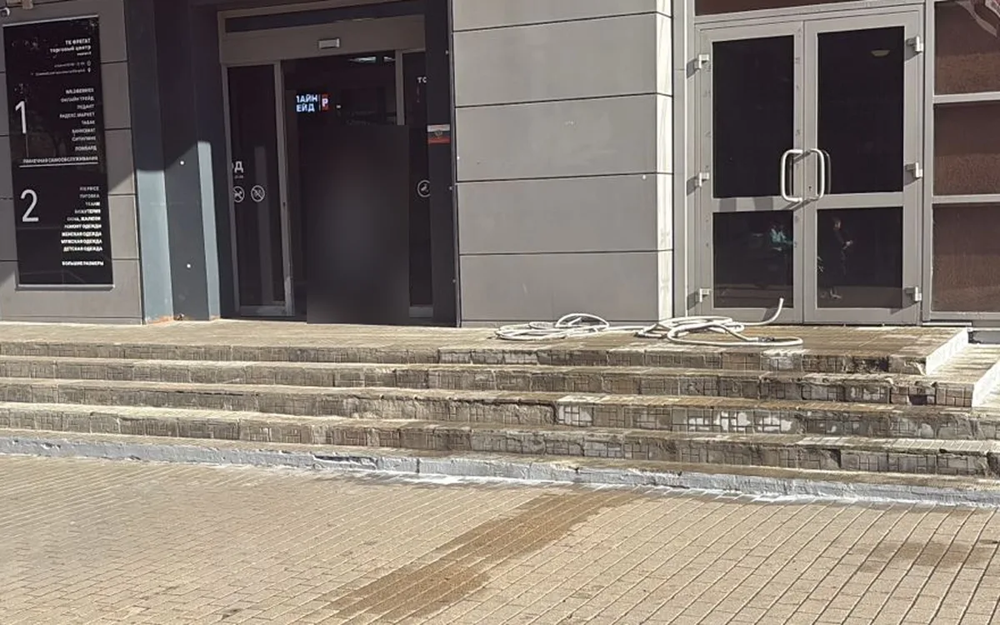
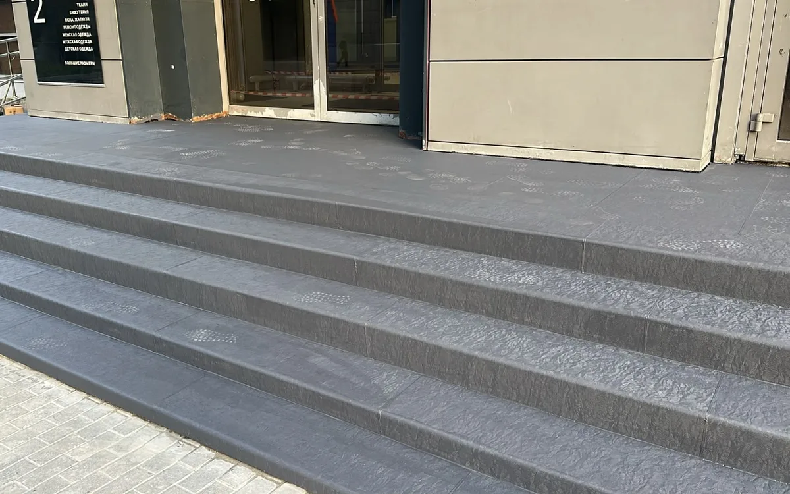
До ПослеШирокую лестницу у одного из входов, где осыпалась плитка, облицевали серым C3
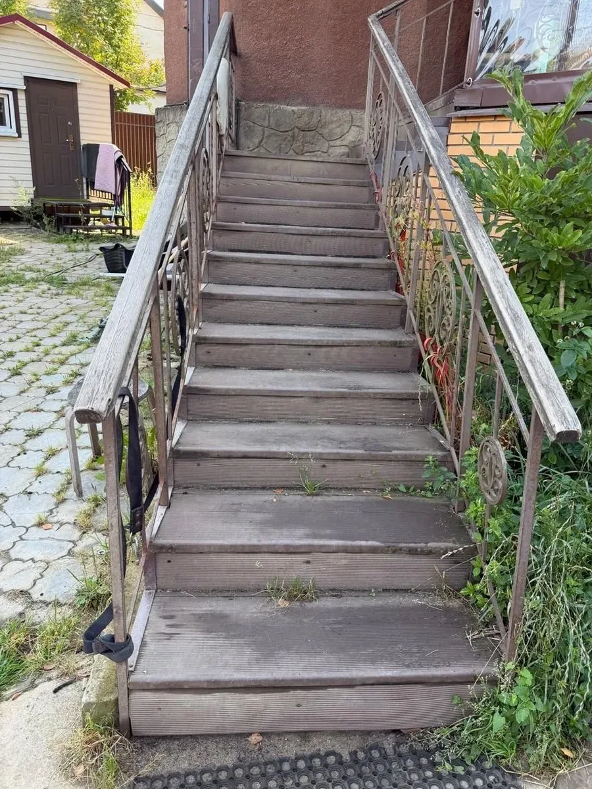
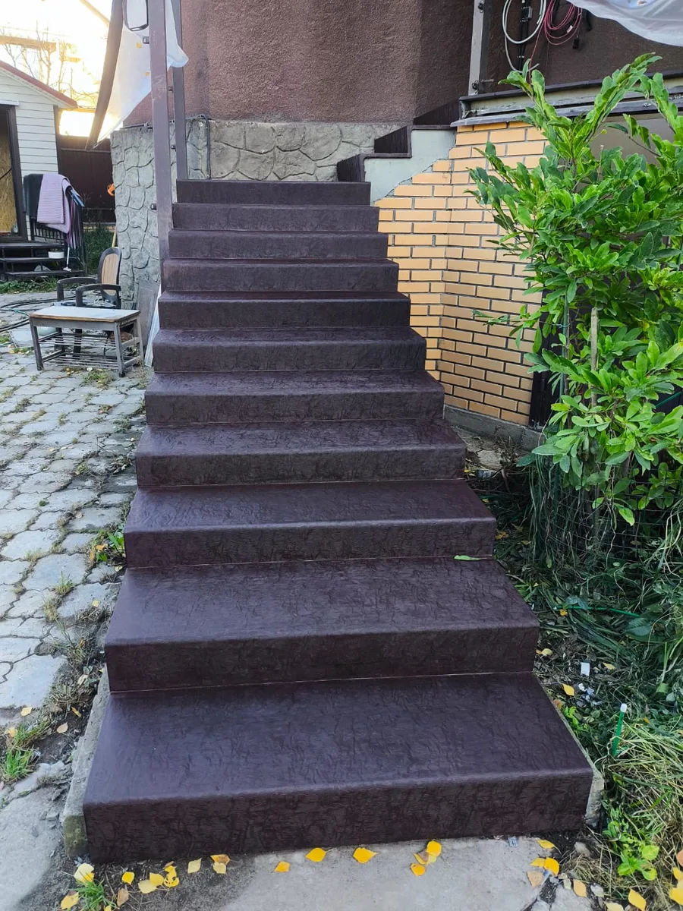
До ПослеКрутую лестницу со стёртыми ступенями облицевали коричневым C3
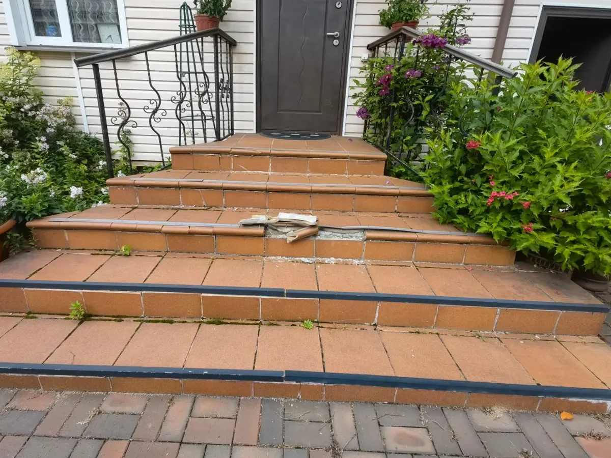
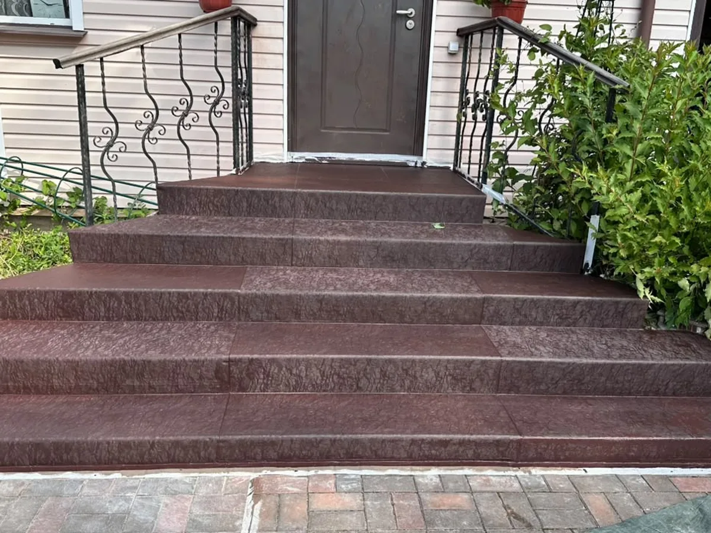
До ПослеСтарую плитку сменили на цельные коричневые ступени C3
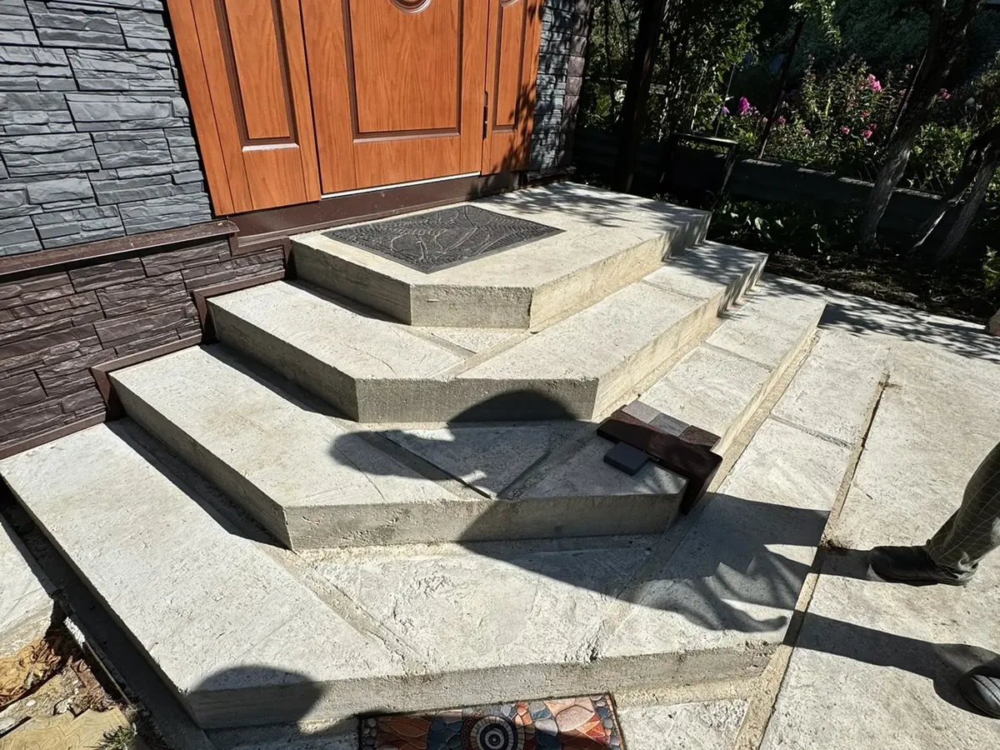
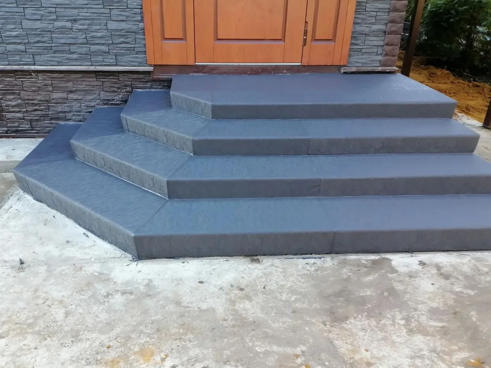
До ПослеГолое бетонное крыльцо облицевали серыми ступенями C3
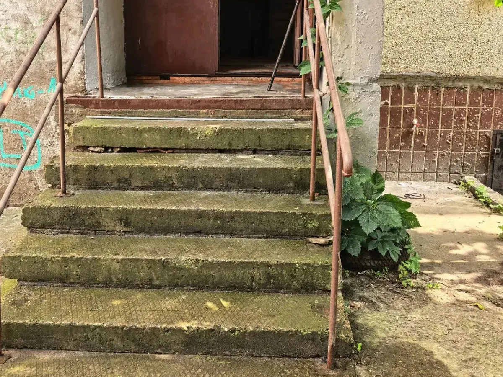
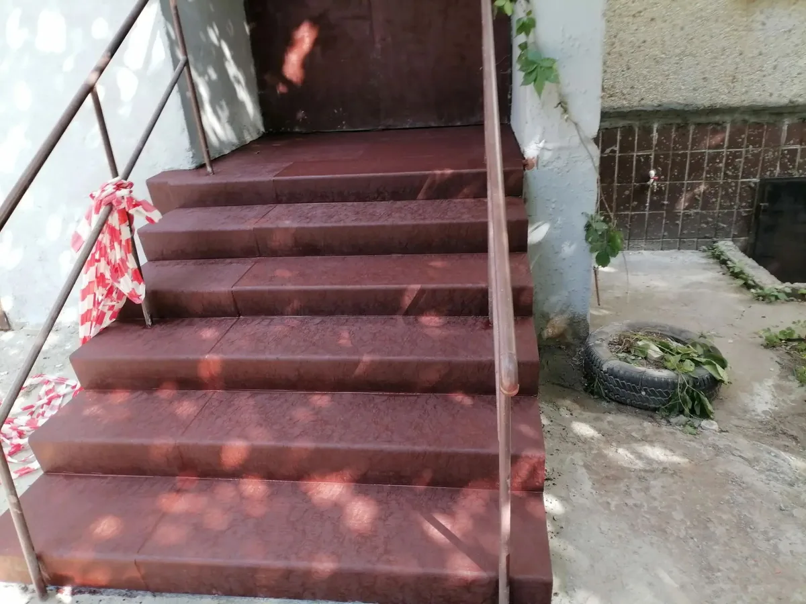
До ПослеРазрушенные ступени во мху стали ровными и красно-коричневыми
Короткий ролик о материале: прочность, мороз и почему вода не попадает внутрь ступени
Берём отзывы с Яндекс Карт без правок, сокращаем только многоточием
Начну со слова спасибо! За грамотную логистику, оперативность, невысокий ценник, терпеливые ответы на глупые вопросы дилетанта. Отдельный респект специалисту, выполнившему работу… Красиво работает человек. …Все на связи, включая первое лицо…
«Отличная грамотная работа»
Крыльцо-ремонт.рф · официальный дилер завода C3
Больше 5 лет мы ремонтируем и облицовываем бетонные крыльца, лестницы и входные группы. Работаем только с материалом C3 и знаем его до мелочей: как подготовить основание и как уложить ступени, чтобы они служили долго.
Монтажники — свои, на объектах работают несколько наших бригад. Сначала приезжает инженер‑замерщик, итоговый расчёт готовит менеджер. Работаем в Москве и Московской области, выезжаем и в соседние регионы.
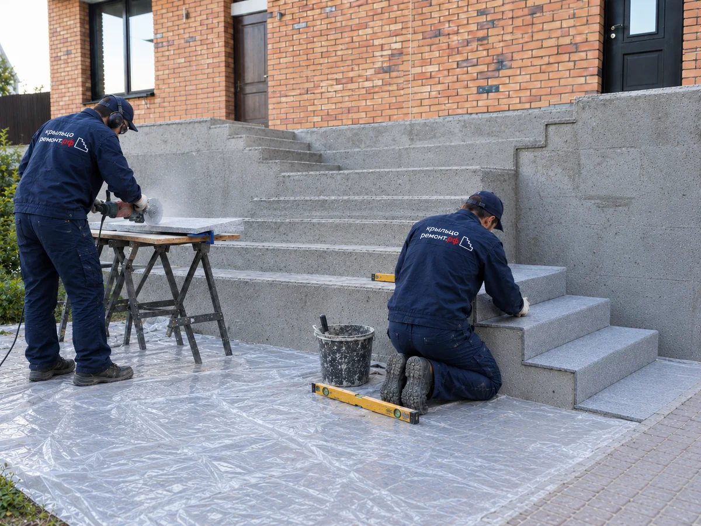
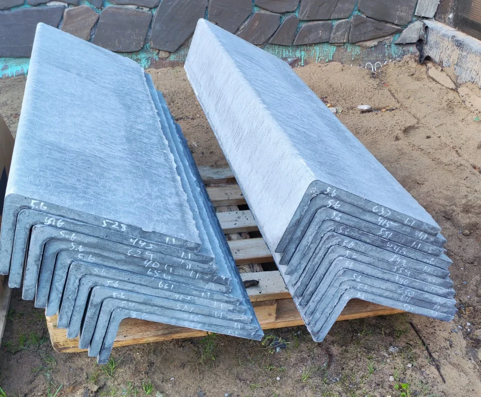
Так материал C3 приезжает на объект: Г‑образные уголки, вложенные друг в друга. Настоящее фото с нашего объекта.
5+ лет
Ремонтируем крыльца
C3
Официальный дилер завода
До 30 лет
Служит материал
12 месяцев
Гарантия на работу
Завод «ИнноФорма» (Тверь), производитель C3, подтверждает: мы — его официальные дилеры. Нажмите, чтобы посмотреть сертификат.